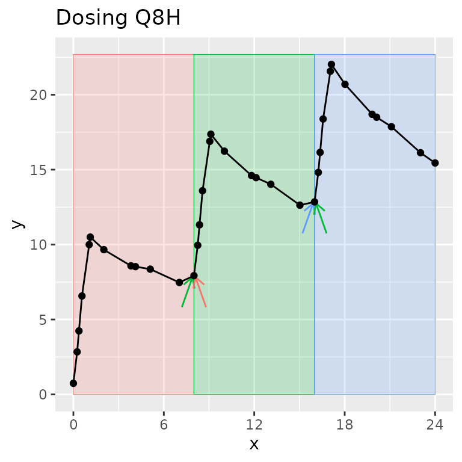
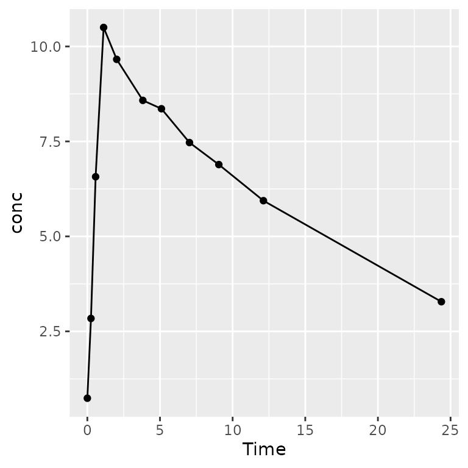

PKNCA – an R package for noncompartmental analysis of pharmacokinetic data
William Denney
17 April 2026
Source:vignettes/v31-FDA-introduction.Rmd
v31-FDA-introduction.RmdPKNCA – an R package for noncompartmental analysis of pharmacokinetic data
Introduction to PKNCA
PKNCA is a tool for calculating noncompartmental analysis (NCA) results for pharmacokinetic (PK) data.
… but, you already knew that or you wouldn’t be here.
PKNCA has several foci:
- be regulatory-ready
- it has approximately 100% test coverage.
- be reproducible
- it has a focus on being scriptable.
- get the right answer or none at all
- it will try to know what you want,
- but all decisions can be overridden, and
- if there is a question that may cause an error or an unanticipated result, either no result will output or an error will be raised.
Dataset Basics
NCA Data are Not Tidy as a Single Dataset
“Tidy datasets… have a specific structure: each variable is a column, each observation is a row, and each type of observational unit is a table.” - Hadley Wickham (https://doi.org/10.18637/jss.v059.i10)
CDISC has NCA tidied, and PKNCA follows that model:
- concentration-time is a dataset (PC domain;
PKNCAconc()object) - dose-time is a dataset (EX/EC domains;
PKNCAdose()object) - NCA results are a dataset (PP domain;
pk.nca()output)
Dataset Basics: What columns are needed?
Column names are provided by the input to PKNCAconc()
and PKNCAdose(); they are not hard-coded.
Columns that can be used include:
-
PKNCAconc(): concentration, time, groups; data exclusions; half-life inclusion and exclusion -
PKNCAdose(): dose, time, groups; route, rate/duration of infusion; data exclusions - intervals given to
PKNCAdata(): groups, start, end, and any NCA parameters to calculate
Dataset Basics: Example interval data
d_interval_1 <-
data.frame(
start=0, end=8,
cmax=TRUE, tmax=TRUE, auclast=TRUE
)| start | end | cmax | tmax | auclast |
|---|---|---|---|---|
| 0 | 8 | TRUE | TRUE | TRUE |
Groups are not required, if you want the same intervals calculated for each group.
PKNCA Functions
What functions are the most used?
-
PKNCAconc(): define a concentration-timePKNCAconcobject- All information about concentration data are given: concentration, time
- Optional information includes: grouping information (usually given), data to exclude, half-life inclusion and exclusion columns
-
PKNCAdose(): define a dose-timePKNCAdoseobject (optional)- dose amount and time are both optional
- Optional information includes: rate or duration of infusion, data to exclude
-
PKNCAdata(): combinePKNCAconc, optionallyPKNCAdose, and optionallyintervalsinto aPKNCAdataobject- the
PKNCAconcobject must be given; thePKNCAdoseobject is optional; interval definitions are usually given; calculation options may be given
- the
-
pk.nca(): calculate the NCA parameters from a data object into aPKNCAresultobject
How do I do a simple calculation? all steps
We will break this down in subsequent slides.
# Concentration data setup
d_conc <-
datasets::Theoph |>
filter(Subject %in% 1)
o_conc <- PKNCAconc(conc~Time, data=d_conc, timeu = "hr", concu = "mg/L")
# Dose data setup
d_dose <-
datasets::Theoph |>
filter(Subject %in% 1) |>
filter(Time == 0)
o_dose <- PKNCAdose(Dose~Time, data=d_dose, doseu = "mg")
# Combine concentration and dose
o_data <- PKNCAdata(o_conc, o_dose)
# Calculate the results
o_result <- pk.nca(o_data)How do I do a simple calculation? Concentration data
# Load your dataset as a data.frame
d_conc <-
datasets::Theoph |>
filter(Subject %in% 1)
# Take a look at the data
pander::pander(head(d_conc, 2))| Subject | Wt | Dose | Time | conc |
|---|---|---|---|---|
| 1 | 79.6 | 4.02 | 0 | 0.74 |
| 1 | 79.6 | 4.02 | 0.25 | 2.84 |
# Define the PKNCAconc object indicating the concentration and time columns, the
# dataset, and any other options. Optionally include units.
o_conc <- PKNCAconc(conc~Time, data=d_conc, timeu = "hr", concu = "mg/L")How do I do a simple calculation? Dose data
# Load your dataset as a data.frame
d_dose <-
datasets::Theoph |>
filter(Subject %in% 1) |>
filter(Time == 0)
# Take a look at the data
pander::pander(d_dose)| Subject | Wt | Dose | Time | conc |
|---|---|---|---|---|
| 1 | 79.6 | 4.02 | 0 | 0.74 |
# Define the PKNCAdose object indicating the dose amount and time columns, the
# dataset, and any other options. Optionally include units.
o_dose <- PKNCAdose(Dose~Time, data=d_dose, doseu = "mg")How do I do a simple calculation? Get results
To calculate summary statistics, use summary(); to
extract all individual-level results, use
as.data.frame().
The "caption" attribute of the summary describes how the
summary statistics were calculated for each parameter. (Hint:
pander::pander() knows how to use that to put the caption
on a table in a report.)
The individual results contain the columns for start time, end time, grouping variables (none in this example), parameter names, values, and if the value should be excluded.
How do I do a simple calculation? Get summary results
All results (summary or individual) can be output either in a Quarto/Rmarkdown report or another file for reporting.
| Interval Start | Interval End | AUClast (hr*mg/L) | Cmax (mg/L) | Tmax (hr) | Half-life (hr) | AUCinf,obs (hr*mg/L) |
|---|---|---|---|---|---|---|
| 0 | 24 | 92.4 | . | . | . | . |
| 0 | Inf | . | 10.5 | 1.12 | 14.3 | 215 |
How do I do a simple calculation? Get individual results
Use as.data.frame() to get the individual NCA parameter
results.
# Look at individual results
pander::pander(head(
as.data.frame(o_result),
n=3
), split.tables = Inf)| start | end | PPTESTCD | PPORRES | exclude | PPORRESU |
|---|---|---|---|---|---|
| 0 | 24 | auclast | 92.37 | NA | hr*mg/L |
| 0 | Inf | cmax | 10.5 | NA | mg/L |
| 0 | Inf | tmax | 1.12 | NA | hr |
PKNCA datasets
How does PKNCA think about data?
Three types of data are inputs for calculation in PKNCA:
- concentration-time (
PKNCAconc), - dose-time (
PKNCAdose), and - intervals.
PKNCAconc and PKNCAdose objects can
optionally have groups. The groups in a PKNCAdose object
must be the same or fewer than the groups in PKNCAconc
object (for example, all subjects in a treatment arm may receive the
same dose).
What is an “interval” and how is it different than a “group”?
A group separates one full concentration-time profile for a subject that you may ever want to consider at the same time. Usually, it groups by study, treatment, analyte, and subject (other groups can be useful depending on the study design).
An interval selects a time range within a group.
One time can be in zero or more intervals, but only zero or one group. Intervals can be adjacent (0-12 and 12-24) or overlap (0-12 and 0-24). In other words, one sample may be used in more than one interval, but one sample will never be used in more than one group.
Legend: The group contains all points on the figure. Shaded regions indicate intervals. Arrows indicate points shared between intervals within the group.

Reporting
Best practices for Data -> PKNCA -> knitr/Quarto
summary() makes summary tables using of NCA results;
pander::pander() creates a table with a caption.
as.data.frame() with the NCA results makes a listing.
| Interval Start | Interval End | AUClast (hr*mg/L) | Cmax (mg/L) | Tmax (hr) | Half-life (hr) | AUCinf,obs (hr*mg/L) |
|---|---|---|---|---|---|---|
| 0 | 24 | 92.4 | . | . | . | . |
| 0 | Inf | . | 10.5 | 1.12 | 14.3 | 215 |
pander::pander(as.data.frame(o_result), split.tables = Inf)Graphics are intentionally not part of PKNCA, but there are some tricks that can help…
Generate all individual profiles using the groups that you defined
using the ggtibble package.
##
## Attaching package: 'ggtibble'## The following objects are masked from 'package:ggplot2':
##
## %+%, ggsave
o_conc <-
PKNCAconc(
conc~Time|Subject,
data=datasets::Theoph
)
pk_figs <-
ggtibble(
as.data.frame(o_conc),
aes(x = Time, y = conc),
outercols = group_vars(o_conc),
caption = "PK over time for subject {Subject}"
) +
geom_line() +
geom_point()
# knit_print(pk_figs)
knit_print(pk_figs[1,])
Validation of PKNCA
PKNCA has an extensive testing and validation suite built-in. To run the testing and validation suite of tests with a full report generated, see the PKNCA Validation vignette.
More information
The PKNCA GitHub page (https://github.com/humanpred/pknca) and the vignettes linked from there have examples and details.
To ask questions or get help, the discussion and issues sections of the GitHub website are available to get help from the community or from me.
Thank you to all of the people who have used, contributed to, published with, and asked questions about PKNCA over the last >10 years!